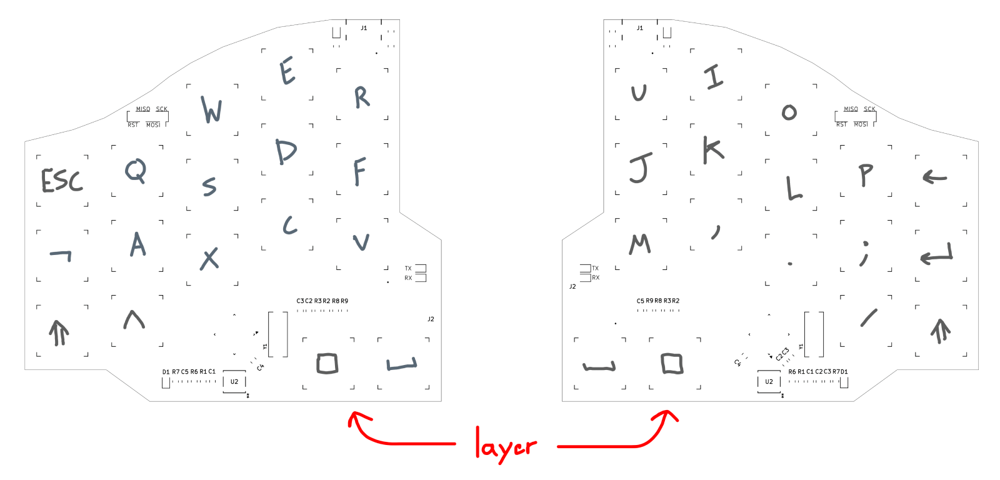
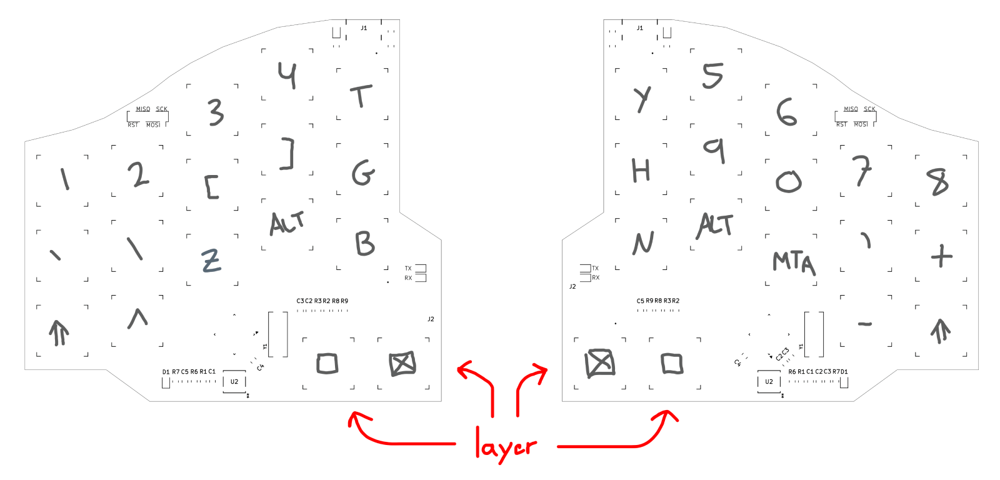

Split mechanical keyboard
6.4.25
Intro
A few years ago I stumbled upon Reddit's r/ErgoMechKeyboards. The unconventional, futuristic looking computer keyboards that this community designed and celebrated struck me as fascinating. While I was content with my standard full-size mechanical keyboard, I still felt drawn to these unique devices. I liked that each keyboard had a distinct shape which specifically suited its creator's hands. I also liked that most of these keyboards were far smaller than the typical 104-key US keyboard. As I browsed, many keyboards stood out to me as pieces of art that I could tell were the product of careful thought and intentional design. Recently, my professor reminded me of this when he mentioned switching to an ergo keyboard, and I felt inspired to make my own.

My final keyboard design.
I wanted to have as few keys as possible in order to minimize the footprint of the PCB, the number of components, and the cost. It seemed like 34 keys was good for a compact, but still usable and learnable configuration. I looked at several layouts, such as Ferris, for reference. I wanted it to be wired, ortholinear, staggered, and split. I envisioned each half to effectively be a mirror image of the other. This way both halves would have the same hardware, could each be plugged into the host computer, and would both have 17 keys. This meant I had to design two PCBs that both used the same overall schematic.
Hardware
For a microcontroller, I chose the ATMega32u2. Although slightly expensive, it was small, low-power, featured on-board UART and USB peripherals, and had a lot of GPIO. In fact, there were more GPIO pins than key switches. Typically, keyboards and keypads use a matrix configuration where switches are connected in rows and columns to reduce the amount of required GPIO. The benefit of a key matrix is to be able to detect up to m * n switches with only m + n GPIO pins, where m is number of rows and n is number of columns. However, this induces some extra latency and compute because polling is O(m * n). I planned to connect each key switch directly to a pin and to theoretically achieve a faster keyboard polling time.
Keyboard half hardware schematic.
The final schematic consisted of the MCU and its required hardware (external clock, reset button, USB resistors), some LEDS, programming headers, a USB-C port, a TRRS port (to connect both halves together with power and data), and key switches. All the GPIO connected to key switches would be configured to have internal pull-ups in firmware. These pins could then be read in just three instructions: read port B, port C, and port D (way better than polling a matrix!). The tradeoff here was a more complicated PCB layout, but I liked the idea of eking out better performance. I also planned to implement debounce in firmware to keep the hardware simple.
Full keyboard PCB layout (minus ground plane).
I decided to use Gateron KS-33 Red low profile switches and DSA keycaps which required 18mm of separation between switches. I staggered the rows to match the natural resting positions of my finger tips. I did this by placing my hand on a piece of paper as relaxed as possible, then marking and measuring the exact vertical distance between each fingertip. I shifted the final column of keys on the outside down to match my little finger's movement outwards. The bottom two key positions were determined in the same way for my thumbs. I then laid out the components and routed everything in KiCad. I tried to follow general good practice: no right angles, one large ground plane, suitable trace widths, and a short clock signal distance. One aspect I could have done better was to avoid long parallel traces. I worried about interference on the USB data lines which stretched from the microcontroller all the way across the board to the USB port, but I luckily didn't run into any issues.

Ordered PCBs.
I did end up with trouble assembling and debugging the boards. Reflowing the boards did not work properly so I had to fix many of the microcontroller and USB pin connections by hand. Then, the board would not respond at all to my ISP programmer. I probed for continuity, checked power voltages, and even tried using a function generator to inject a stable clock signal in case the crystal oscillator was faulty. None of that worked. What ended up bringing the MCU to life was desoldering the reset button capacitor, C1. I placed that 1uf cap to debounce the reset button. However, it apparently also disrupted the timing of the ISP programming sequence. I removed it from the hardware schematic as it wasn't really necessary.
Firmware
With the hardware done, I moved on to code. I used Dean Camera's LUFA for USB HID handling. Implementing the HID protocol in firmware is something that I would love to do as its own project in the future, but I needed something reliable and straightforward for this project. I started with the LUFA keyboard demo and first made changes to support n-key rollover. This involved creating a new HID report structure for sending all 103 possible keys. I then wrote code for polling the key presses by reading three IO ports and applying some simple binary arithmetic. Next, I set up the microcontroller's UART peripheral to send key presses between the keyboard halves at the maximum baud rate possible (the 32u2 had a convenient double speed UART mode). For reliability, it helped to make each UART transmission have a constant starting byte header.
I designed such that one half should be plugged into the host PC at any given time and the other not. I called these halves main and periperal respectively. I wrote firmware to detect which half currently had a valid USB connection and to set that device as main. Keypresses on peripheral were always immediately sent over UART to trigger a hardware interrupt on main. The keypresses were then accumulated in a buffer until main was ready to package and send them off to the host PC. The only data sent from main to peripheral were the layer key presses. Because there were just 34 keys, the keymap required multiple layers to achieve full functionality. The second layer was activated by pressing the layer key.

Layer 1 keymap.

Layer 2 keymap.
I spent an afternoon coming up with this keymap which I hoped would be intuitive. My main goal was to keep keys as close as possible to a traditional QWERTY layout so it wouldn't take too much effort to adapt to. On layer 2 there was an extra set of toggleable layer keys to allow for a third layer with function keys, arrow keys, and other miscellaneous keys like printscreen which I could implement in the future.

Key switch bounce timing.
Before implementing debounce, I measured the timing of the switches and found the typical value bounce length to be 4 to 5 microseconds. This was so short that I didn't even bother handling it in firmware and there seemed to be no issues. If I were to redesign the boards, I would put some small capacitors across each switch to filter out the bounce and to increase signal stability.
I encountered several bugs while finishing the software. Most of them were related to the timing of sending and receiving serial data. One of the biggest roadblocks was getting the layer key to register properly when pressed on either or both main and peripheral. I needed to synchronize the layer state between the two halves. The solution involved having the keyboards only send state transitions to each other instead of continously sending the current layer state on each keypress. The debug LED I put on the PCB helped me instrumentally to solve these issues while developing. I used it to indicate various events such as USB connection and disconnection, UART data sent and received, and key presses registered. Having one or two more would have been even better, and I will definitely be putting these on future projects.
Final Touches
To finish up the device, I machined a pair of simple aluminum plates to screw the two PCBs on to. I bought quarter-inch thick stock and cut the plates to size on a bandsaw. I then ground and sanded them down to the right shape, tapped mounting holes, and finished them off with a file by hand.

Aluminum base plates.
It was far from perfect and something like a water jet or CNC would have provided much more precision. But I didn't have the skills necessary to operate those, and I happened to like the rough-hewn look anyway. I stuck a set of adhesive rubber feet to the bottom of each base to ensure they wouldn't slide across my desk while in use, and I called the project complete.

Fully assembled keyboard right half.
Results
Now that it is finished, I'm very happy with how it came out. It looks and feels great and so far the firmware has held up perfectly. One downside is that it takes a lot of effort to learn to use this keyboard effectively. It is especially difficult to teach my brain to not move my pointer fingers when access keys like G and H. For a future version, I would change it to have an extra column of keys next to my pointer fingers instead of next to my little fingers. For now, I will tinker with the keybinds as I go to find most comfortable setup for me. All the code and hardware designs are public on my github for anyone interested in seeing exactly how everything works!

Fully assembled keyboard, plugged in.
Some things I should have done differently
- Added VCC and GND breakout pins for debugging.
- UART leds should have been between VCC and serial pin instead of between pin and GND so they blink on when data is sent.
- Added small debounce capacitors across each switch.
- Used larger current-limiting resistors in series with LEDS. With 150ohms the LEDS are almost blinding. I ended up increasing to 10kohm!
- Considered a more comfortable layout. The current design prioritized pinkie movement.
- Triple-checked the schematics. I somehow ended up with duplicate capacitors on the right PCB.
- It would have been really nice to have a physical power switch so I didn't have to constantly unplug when changing stuff around.